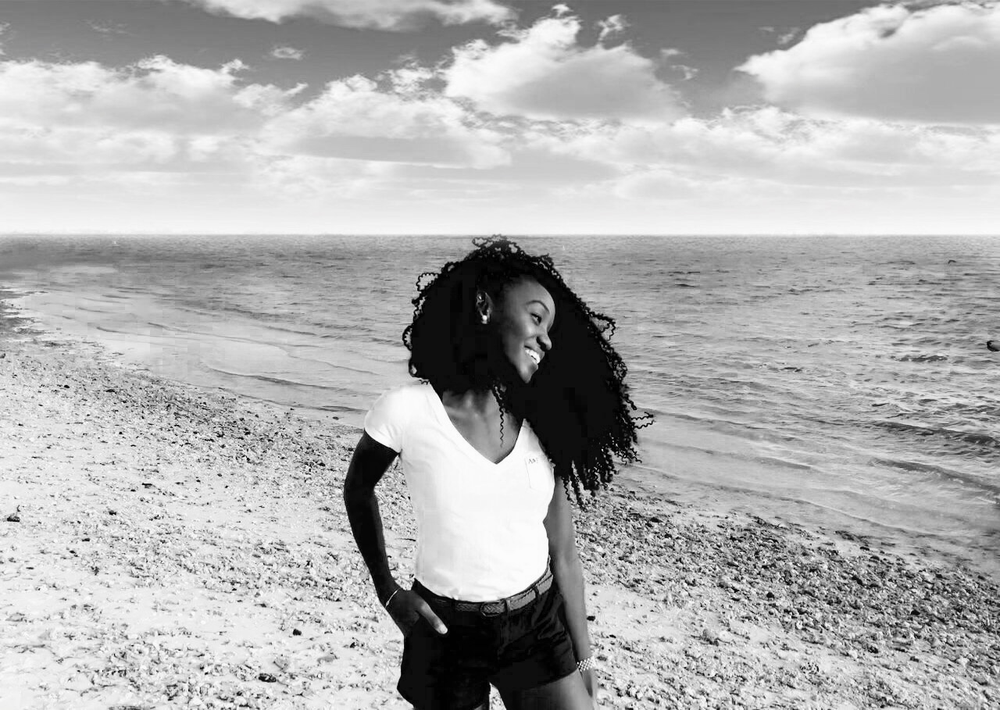

Vee is a 21-year-old junior at the University of Miami, majoring in Advertising with a French Minor. Born in 1996, after spending her entire childhood in the Democratic Republic of Congo, Vee remains imbued by the African culture. Her biggest dream was to become a supermodel like the Britsih model Naomi Campbell. Unfortunately, there were no modeling agency in Congo. Vee was amazed by the career of the supermodel and decided to follow her steps by creating a modeling agency in her country and establish herself as an entrepreneur while helping build a career for the Congolese. During her spare time, Vee loves to be around her family and work out. She currently work as a Fitness Assistant at the Patti and Allan Hebert Wellness Center. Vee is not only passionate about fashion but also about dogs, elephants, and horses.
